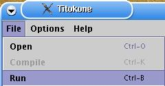

The Titokone user's manual
Contents
- Overview
- What you can do with the Titokone
- The TTK-91 machine language
- Extending and adjusting the system
- Troubleshooting
Titokone on konekielisimulaattori, jonka tarkoituksena on n‰ytt‰‰, kuinka symbolisen
konekielen suoritus etenee yksinkertaisella prosessorilla.
* kun kuvaillaan koodin‰kym‰‰, siin‰ pit‰‰ muistaa korostaa ett‰ muisti
on yhten‰inen alue vaikka siit‰ onkin eristetty osa koodialueeksi. Myˆs
maininta siit‰, ett‰ data-alueella symbolisella arvolla ei ole
merkityst‰ (ja ett‰ suurin osa komennoista on jonkinlaisia noppeja)
lienee hyv‰st‰.
* n‰pp‰inshortcutit, jahka varmistuvat, mukaan kuvauksiin.

|
- Valikot
- Code window
- Status
- Display
- Keyboard input
- Symbol table
- Registers
- Comments
|

2.1 Using Titokone
Titokone on toteutettu javalla ja se k‰ynnistet‰‰n jar-paketista.

|
2.2 Opening a TTK-91-program
|

|
Titokoneella pystyt‰‰n ajamaan kahden tyyppisi‰
ohjelmatiedostoja: symbolisessa muodossa olevia
l‰hdekooditiedostoja ja bin‰‰ritiedostoja.
L‰hdekooditiedostot on ensin k‰‰nnett‰v‰,
jotta niit‰ voidaan ajaa. K‰‰nnetty ohjelma tallentuu
automaattisesti oletushakemistoon bin‰‰rimuodossa.
L‰hdekooditiedoston oletusp‰‰te on K91 ja
bin‰‰ritiedoston B91. Ohjelma avataan painamalla
pikakuvaketta tai valitsemalla tiedostovalikosta
kohta 'avaa'.
|

|
2.3 Compiling TTK-91-program
|

|
K‰‰nt‰minen aloitetaan painamalla pikakuvaketta tai valitsemalla tiedostovalikosta
kohta 'k‰‰nn‰'. K‰‰nt‰minen jatkuu k‰ytt‰j‰n asetusten(LINKKI / KTS kohta) mukaisesti;
joko pys‰hdellen tai kerralla loppuun asti k‰‰nt‰en. Jos k‰‰nt‰minen on pys‰htynyt tietylle
riville, k‰‰nt‰mist‰ jatketaan painamalla (KELAA).
|

|
K‰‰nt‰mist‰ voi suorittaa askel kerrallaan, edeten seuraavaan tapahtumaan asti.
|

|
Halutessaan k‰ytt‰j‰ voi suorittaa k‰‰nnˆksen kerralla loppuun painamalla.
|
K‰‰nnˆs pys‰htyy, jos l‰hdekoodissa tapahtui virhe. Virheest‰ ilmoitetaan
alapalkissa (STATUSBAR).
ON SYYTƒ KIRJOITTAA MY÷S TƒNNE: K‰yttˆohjeessa pit‰‰ mainita, ett‰ kunkin rivin muokkaus tulee voimaan
vasta, kun silt‰ rivilt‰ poistutaan; muuten k‰‰nt‰j‰ ei saa muokatun
rivin tietoja mukaansa. (Ja sitten ett‰ se tallentaa silloin ja tolloin
blahblah.)
T‰h‰n liittyen: Olli, laita k‰yttˆohjeen "lis‰tt‰vi‰ juttuja"
-listallesi koodin muokkauksen toiminnan ohje. Eli se tallentaa koodin
milloin tarkalleen, Arto? Ilmeisesti kun muutettu koodi laitetaan
uudestaan k‰‰ntym‰‰n, mutta tapahtuuko sit‰ muulloinkin?

|
2.4 Executing TTK-91-program
|
|

|
T‰t‰ nappia painamalla suoritetaan ohjelman ajaminen. |
2.6 Saving TTK-91 binary file
2.x Changing compiling options
2.x Erasing memory
2.x Changing the size of the memory
2.x Language properties

|
======================================================================
A SUMMARY OF TTK-91 COMMANDS
======================================================================
+--------------------------------------------------------------------+
¶ Operation code ¶ Rj ¶ M ¶ Ri ¶ address part ADDR ¶
¶ 8 bits ¶ 3 ¶ 2 ¶ 3 ¶ 16 bits ¶
+--------------------------------------------------------------------+
31 24 23 16 15 0
In the symbolic machine language, the commands are of the form
LABEL OPER Rj,M ADDR(Ri)
where OPER the symbolic name of the command
Rj the first operand (register R0..R7)
M addressing mode:
= immediate operand
direct addressing (empty, ie. not marked)
@ indirect addressing
ADDR address part (memory address or constant value)
Ri possible index register (register R0..R7)
If some part of a command has no meaning, it can be left out. It is
possible to add a label (symbolic address) in front of a command. The
label should consist of the letters A-÷, 0-9 and _, and contain at
least one non-numerical character. Only the first 8 characters are
considered.
Almost all commands have the following forms available:
OPER Rj,ADDR direct memory addressing
OPER Rj,=ADDR immediate operand
OPER Rj,@ADDR indirect memory addressing
OPER Rj,ADDR(Ri) indexed addressing
OPER Rj,=ADDR(Ri) indexed immediate operand
OPER Rj,@ADDR(Ri) indexed indirect memory addressing
OPER Rj,Ri direct register addressing
There are exceptions:
STORE The latter operand is always the target address;
it cannot be a register or a constant value.
POP The latter operand must always be a register.
JUMP COMMANDS The latter operand is always the target address;
it cannot be a constant. In the jump commands which
look at the state register, the first operand is
ignored.
NOP The operands are ignored.
======================================================================
The symbolic commands of the TTK-91 machine language
======================================================================
Data transfer commands:
LOAD Stores the value of the latter operand to the register Rj.
STORE Stores the integer in Rj as the value of the latter operand.
IN Reads an integer from the device given as the latter operand
into the register Rj (eg. IN R1,=KBD to read from the keyboard).
OUT Outputs the integer in the register Rj to the device given as
the latter operand (eg. OUT R1,=CRT to print to screen).
Arithmetic and logical commands:
The result of the calculation is stored in register Rj.
ADD Adds the value of the latter operand to the integer in the
register Rj.
SUB Substracts the value of the latter operand from the integer in
the register Rj.
MUL Multiplies the integer in the register Rj with the value of the
latter operand.
DIV Divides the integer in the register Rj with the value of the
latter operand, and stores the whole part in Rj.
MOD Modulo divides the integer in the register Rj with the value of
the latter operand, and stores the remainder in Rj.
AND Boolean logic 'and' between Rj and the value of the latter operand.
OR Boolean logic 'or' between Rj and the value of the latter operand.
XOR Boolean logic 'exclusive or' between Rj and the value of the
latter operand.
SHL Shifts the bits of the register Rj left, with the number of
shifts given by the value of the latter operand. Fills the
right end with 0 bits.
SHR Shifts the bits on the register Rj right, otherwise like SHL.
SHRA Performs an arithmetic right shift; as in SHR, but fills the
left end with copies of the leftmost bit, thus keeping negative
numbers negative.
COMP Compares the first operand with the second operand and stores
the result in the status register SR's bits L=less, E=equal,
G=greater. See eg. JLES.
Forking commands:
JUMP An unconditional jump to the target address expressed by the
second operand.
JNEG Jump if negative. If Rj < 0, jumps to the address given as the
second operand, otherwise continues with the next command.
JZER Jump if zero, ie. if Rj = 0
JPOS Jump if positive, if Rj > 0
JNNEG Jump if not negative, if Rj >= 0
JNZER Jump if not zero, if Rj <> 0
JNPOS Jump if not positive, if Rj <= 0
JLES Jump if less - if the status register SR has its L bit set,
jumps to the address given as the second operand, otherwise
continues from the next command. Used together with the COMP
command.
JEQU Jump if equal, ie. if E bit is set in SR
JGRE Jump if greater, if G bit is set in SR
JNLES Jump if not less, if E or G bit is set in SR
JNEQU Jump if not equal if L or G bit is set in SR
JNGRE Jump if not greater if L or E bit is set in SR
Stack commands:
The first operand of the command, the register Rj, points to the top
of the stack, ie. the topmost item in it. Usually, the register SP
(which is also R6) is used as the stack pointer.
PUSH Increases the stack pointer Rj's value by one and stores the latter
operand as the topmost item in the stack.
POP Removes the topmost item in the stack and stores it as the
register Ri (the latter operand is always a register). Substracts
one from the stack pointer Rj.
PUSHR Pushes the registers R0, R1, R2, R3, R4, R5 and R6 (SP) to the
stack, in this order. Before pushing each register, increases the
stack pointer Rj's value by one.
POPR Pops values to the registers R6 (SP), R5, R4, R3, R2, R1 and
R0, in this order, from the stack. For each pop, first fetches
the value from the top of the stack indicated by the register
Rj, and then substracts one from Rj.
Subroutine commands:
CALL Call procedure. Moves the control (by manipulating the program
counter) to the address given by the latter operand. Stores the
return address to the stack, with its top indicated by Rj.
EXIT Returns from a procedure to the command following its call. The
return address is found from the stack, the top of which Rj
points to. The latter operand indicates the number of parameters
passed to the subroutine in the call.
System calls:
SVC Supervisor call. Calls a service routine in the operating system.
The first operand is Rj, indicating the top of the stack, the
latter operand gives the number identifying the service.
Supervisor calls are special subroutine calls to predefined
procedures. Their code is invisible to the user, and is considered
to be stored "outside" the memory space.
Service identifiers:
HALT : Stops the execution of the program.
TIME : Gives the time of day. The stack should contain the
addresses to store the hour, minute and second values.
Note their order!
DATE : Gives the date. The stack should contain the addresses
to store the year, month and day values. Note their order!
READ : Reads an integer from the keyboard. The stack should
contain the address to store the integer to.
WRITE: Prints an integer to the screen. The stack should
contain the value to print.
Other:
NOP No operation. This command does nothing.
======================================================================
The operation codes of the TTK-91 commands
======================================================================
Command Binary Decimal Hexadecimal
NOP 0000 0000 0 00
STORE 0000 0001 1 01
LOAD 0000 0010 2 02
IN 0000 0011 3 03
OUT 0000 0100 4 04
ADD 0001 0001 17 11
SUB 0001 0010 18 12
MUL 0001 0011 19 13
DIV 0001 0100 20 14
MOD 0001 0101 21 15
AND 0001 0110 22 16
OR 0001 0111 23 17
XOR 0001 1000 24 18
SHL 0001 1001 25 19
SHR 0001 1010 26 1A
SHRA 0001 1011 27 1B
COMP 0001 1111 31 1F
JUMP 0010 0000 32 20
JNEG 0010 0001 33 21
JZER 0010 0010 34 22
JPOS 0010 0011 35 23
JNNEG 0010 0100 36 24
JNZER 0010 0101 37 25
JNPOS 0010 0110 38 26
JLES 0010 0111 39 27
JEQU 0010 1000 40 28
JGRE 0010 1001 41 29
JNLES 0010 1010 42 2A
JNEQU 0010 1011 43 2B
JNGRE 0010 1100 44 2C
CALL 0011 0001 49 31
EXIT 0011 0010 50 32
PUSH 0011 0011 51 33
POP 0011 0100 52 34
PUSHR 0011 0101 53 35
POPR 0011 0110 54 36
SVC 0111 0000 112 70
======================================================================
Predefined symbols of the TTK-91 machine
======================================================================
These symbols can be used without explicitly defining them in a
TTK-91 program.
Symbol Value
---------------------
CRT 0
KBD 1
STDIN 6
STDOUT 7
HALT 11
READ 12
WRITE 13
TIME 14
DATE 15
======================================================================
Instructions to the compiler (fake commands)
======================================================================
The compiler instructions direct the program translating the symbolic
machine language to binary. They are NOT actual symbolic commands.
name EQU value
The alias command EQU defines a symbolic name for an integer
value. The symbol name can be used in the ADDR field of a command, in
which case it will be handled as 'value' written in its stead
would be.
name DC value
The memory allocation command DC (data constant) allocates one word of
memory for a constant, aliases 'name' with the constant's memory
address and stores 'value' in the allocated address in the
memory. 'Name' can then be used in a command's ADDR field as a
memory address.
name DS size
The memory allocation command DS (data segment) allocates an area of
memory, sized 'size' words. It aliases 'name' with the start address
of the memory area. 'Name' can then be used in a command's ADDR field
as a memory address. This instruction is used for allocating space for
global variables.
option DEF string
This special instruction changes options for simulating the file
system of a TTK-91 machine. 'String' should be an absolute directory
path. Examples:
STDIN DEF /home/myuser/ttk91/stdin
STDOUT DEF C:\mydir\stdout
Available options are:
STDIN To set which file stdin data is read from.
STODUT To set which file stdout data is written to.
HOME To set the user's home directory for this application;
unused in Titokone as the home directory is requested from
the underlying operating system via the Java virtual machine.
The default files for the two first options are stdin and stdout in
the user's home directory.
4.1 Asetustiedostot
4.2 Uuden kielen tukeminen
* oman k‰‰nnˆstiedoston valitsijan pit‰‰ varmistaa, ettei
k‰‰nnˆstiedostossa ole pakettim‰‰rett‰ - muuten sen avaaminen
ep‰onnistuu (fi.hu.cs.titokone.resources.Translationsia ei voi avata
tiedostosta, mutta pelk‰n Translationsin voi - mutta sen nimi riippuu
siit‰ onko itse java-tiedostossa 'package'-m‰‰re). Tekij‰ voi ottaa
k‰‰nnˆsten pohjaksi Translations.javan, jossa on ohjeita t‰h‰n; mallia
tiedoston saattamisesta k‰ytett‰v‰ksi kannattaa kuitenkin ottaa muista
k‰‰nnˆksist‰, t‰ss‰ tapauksessa Translations_fi.javasta.
Kun ohjelma latautuu k‰‰nnˆksen tai ajon
p‰‰ttymisen j‰lkeen, saan kommenttikentt‰‰n virheilmoituksen muotoa
"STDIN-datatiedostoa ei voi lukea: /minun/hakemistoni/stdin (Joku
syy)".
Ohjelma ilmoittaa vain, ett‰ mik‰li
tulevaisuudessa n‰ill‰ asetuksilla joku TTK-91-sovellus yritt‰‰
lukea STDIN-laitteelta, luku ep‰onnistuu ellei jotain tehd‰
asialle. "Joku syy" -osuus kertoo, mik‰ j‰rjestelm‰n antama
virheilmoitus oli kun tiedostoa luettiin. Jos sovelluksesi tarvitsee
STDIN-laitetta, korjaa tiedoston tilanne ja lataa sovellus
uudelleen. Ks. myˆs
2.5, TTK-91-ohjelman
lataaminen.
On tyls‰‰.
* virheilmoitukset pit‰‰ k‰yd‰ l‰pi ja selvitt‰‰, mit‰ kukin tarkoittaa.
T‰t‰ pit‰nee tehd‰ osittain ryhm‰ss‰ tai ainakin kysellen.
---------------------
eka:
Puhuin viime kokouksessa, ett‰ olen ottanut GUIhin Look And Feel -jutut mukaan, mik‰ saisi GUI:n n‰ytt‰m‰‰n etenkin Windowsissa uskomattoman hyv‰lt‰. Harmittavasti olen kuitenkin tˆrm‰nnyt Javan 1.4.2 versiota riivaavaan bugiin, joka aiheuttaa yhden tietyn operaation aikana mahdollisesti Exceptionin ilman, ett‰ siihen voi itse vaikuttaa. Aluksi tuskailin kyseisen Exceptionin kanssa, kun en mill‰‰n ymm‰rt‰nyt ett‰ mist‰ sellainen voi tulla. Sitten ‰lysin katsastaa Googlesta parilla hyvin valitulla hakusanalla ja kappas vain, osoittautuikin ett‰ kyseess‰ on ihan raportoitu bugi. Bugin numero on 4711700 ja suora linkki raporttiin on http://developer.java.sun.com/developer/bugParade/bugs/4711700.html
Mahdollisesti bugin voi kiert‰‰ parilla lis‰rivill‰ koodia, mutta se maksaa silloin t‰llˆin pidemm‰ll‰ latausajalla enk‰ voi taata ett‰ ohjelma v‰ltt‰m‰tt‰ edes k‰ynnistyy joka kerta. Tosin, todenn‰kˆisyys sille on koneesta rippuen 1/100. Tulevissa Javan versioissa kyseist‰ ongelmaa ei tietenk‰‰n ole, sill‰ eikˆh‰n lˆydetyt bugit yleens‰ korjata.
Toinen mahdollisuus on, mik‰li Exception tulee, ilmoittaa pahoitellen, ett‰ ohjelma ei k‰ynnisty johtuen Javassa olevasta bugista ja pyydet‰‰n k‰ynnist‰m‰‰n uudelleen. Harvoin tuo kahta kertaa per‰kk‰in tulee. Mun mielest‰ kuitenkaan ei kannata tinki‰ siit‰ hienosta ulkon‰ˆst‰ jonkun typer‰n bugin vuoksi, joka tuskin vaivaa en‰‰ ainakaan syksyll‰, jolloin ohjelmaa oikeasti k‰ytet‰‰n.
ennen:
On Wed, 2004-08-18 at 11:10, Arto ≈kerlund wrote:
> Mahdollisesti bugin voi kiert‰‰ parilla lis‰rivill‰ koodia, mutta se
> maksaa silloin t‰llˆin pidemm‰ll‰ latausajalla enk‰ voi taata ett‰
> ohjelma v‰ltt‰m‰tt‰ edes k‰ynnistyy joka kerta. Tosin, todenn‰kˆisyys
> sille on koneesta rippuen 1/100. Tulevissa Javan versioissa kyseist‰
> ongelmaa ei tietenk‰‰n ole, sill‰ eikˆh‰n lˆydetyt bugit yleens‰
> korjata.
Hmm, laitetaan Titokoneeseen varmuuden vuoksi optio ton yli
hypp‰‰miseksi (jos parametrien joukossa on vaikka --disablelookandfeel,
ei tehd‰ lookandfeel-juttua), ja k‰ytet‰‰n workaroundia. Olli, laitatko
itsellesi ylˆs ett‰ kirjaat maininnan k‰yttˆohjeeseen?
------------------
On Sun, 2004-04-18 at 14:41, Olli Alm wrote:
> Ok, pist‰n korvan taakse tuon asian. Kuulostaa kyll‰
> hieman enemm‰n toteutusdokkarin kuin k‰yttˆohjeen asialta
> mielest‰ni. Mutta joo.
Siis k‰yttˆohjeeseen se menee muodossa "voit tˆrm‰t‰ t‰llaiseen
virheeseen, joka johtuu Javan 1.4.2-version bugista eik‰ yleens‰ toistu,
mutta tarvittaessa voit k‰ytt‰‰ --disablelooknfeel -parametri‰, jolloin
myˆs virhe poistuu". Toteutusdokkarissa voisi tietty mainita eri
parametrit joilla ohjelman voi k‰ynnist‰‰, mutta niille ei taida olla
juuri nyt j‰rkev‰‰ paikkaa.
-------------------
Syˆ leip‰‰ ni ei o tyls‰‰. --Jukka Tilsa